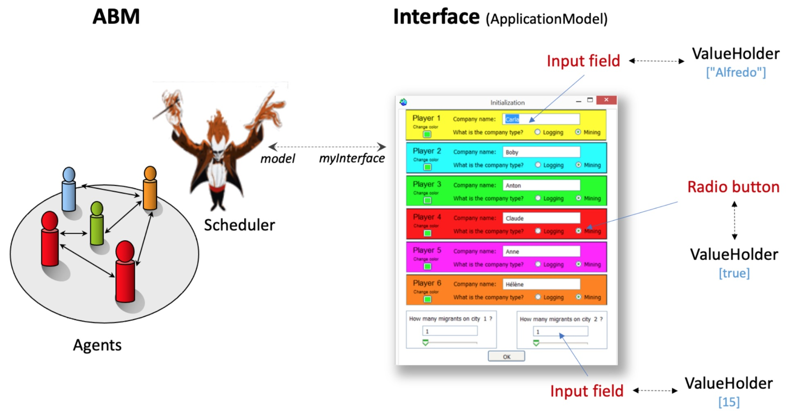

|
Interactive Model
Ce modèle jouet illustre les différentes manières de
construire des interfaces utilisateur (GUI) avec Cormas.
Un tutoriel
présente les concepts et la manière de générer une
interface graphique dans Smalltalk VW. Il est adapté a
Cormas afin de créer votre propre GUI pour votre modele.

|